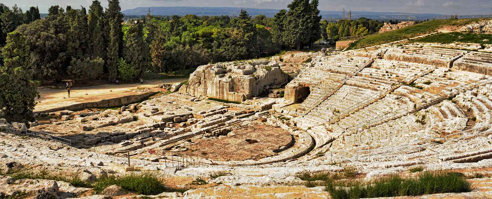
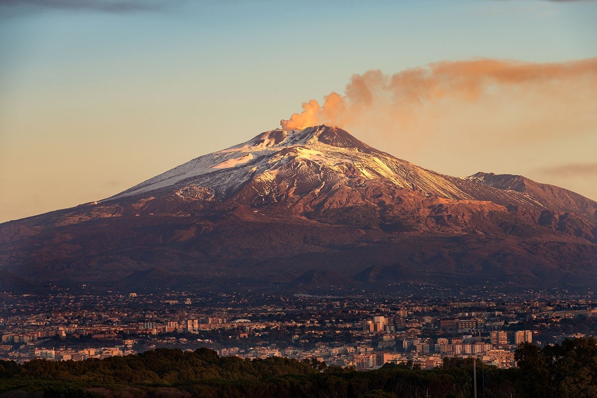
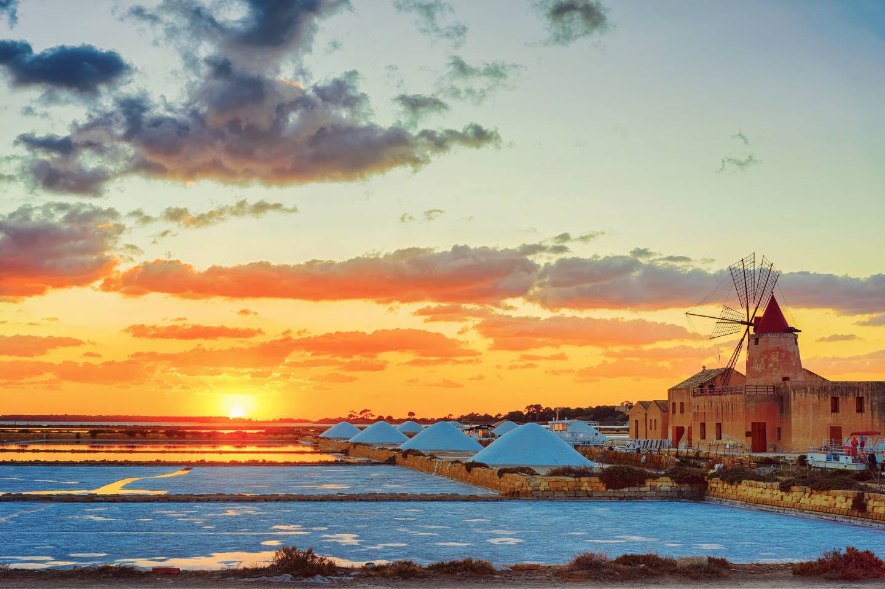
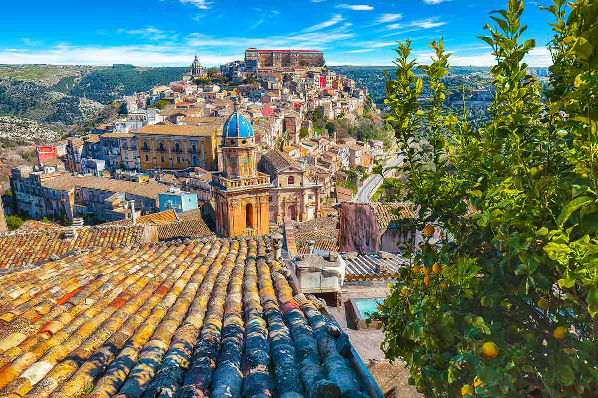
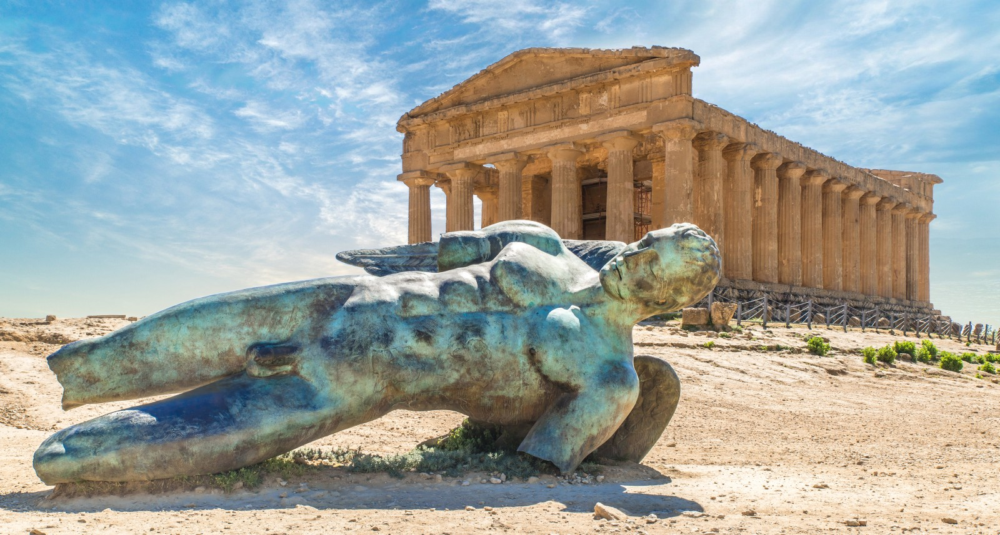

Province

Un mosaico di territori siciliani
La Sicilia è composta da nove province distinte, ognuna con caratteristiche proprie che rendono l'isola ricca e diversificata. Palermo è il principale centro politico e culturale, Catania si distingue per il suo dinamismo e la presenza dell'Etna, mentre Messina rappresenta un importante collegamento con la penisola italiana.
Altre province, come Agrigento, Trapani, Siracusa e Ragusa, offrono un patrimonio ricco di paesaggi, storia e tradizioni, mentre Enna e Caltanissetta raccontano l'anima più autentica dell'entroterra. Insieme, formano un insieme di identità diverse che definiscono il fascino della Sicilia.




Tradizioni e identità delle province siciliane
Le province della Sicilia racchiudono un patrimonio storico molto antico, segnato dal passaggio di diverse civiltà come Fenici, Greci, Romani, Arabi e Normanni. Le loro tracce sono ancora visibili nel territorio e nei monumenti, come dimostrano città come Siracusa e Agrigento, che conservano importanti testimonianze del passato mediterraneo.
La cultura locale si manifesta anche attraverso feste, usanze e prodotti tipici, che variano da zona a zona e rafforzano il legame tra le comunità. Allo stesso tempo, le province siciliane riescono a coniugare tradizione e innovazione, sviluppando attività legate al turismo, all'agricoltura e ai servizi, valorizzando così il proprio patrimonio senza rinunciare al futuro.
